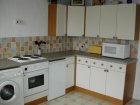
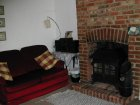
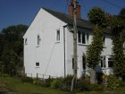
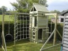
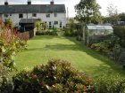
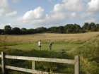
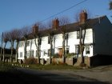

|  | The Kitchen - newly fitted. View larger version. |
|  | The Lounge - with log/coal burning fire. View larger version. |
|  | Outside the cottage. View larger version. |
|  | The playframe in the garden. View larger version. |
|  | This is a view of the back garden. The garden is shared between ourselves and the cottage. You can have full use of the garden which is kept in an 'English Country' style. There is garden furniture available and even a barbeque. View larger version. |
|  | This is a photograph of the field next to the cottage. It is 15 acres and has a public footpath heading towards the near by village of Doddington. View larger version. |
|  | Lime Tree Cottages. View larger version. |